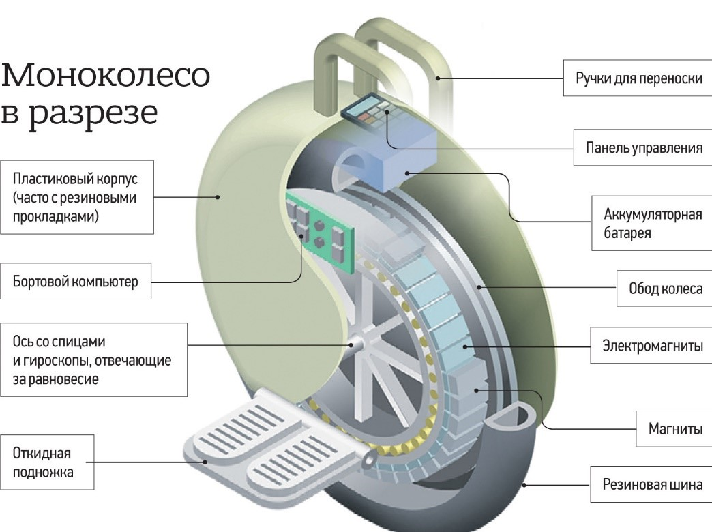
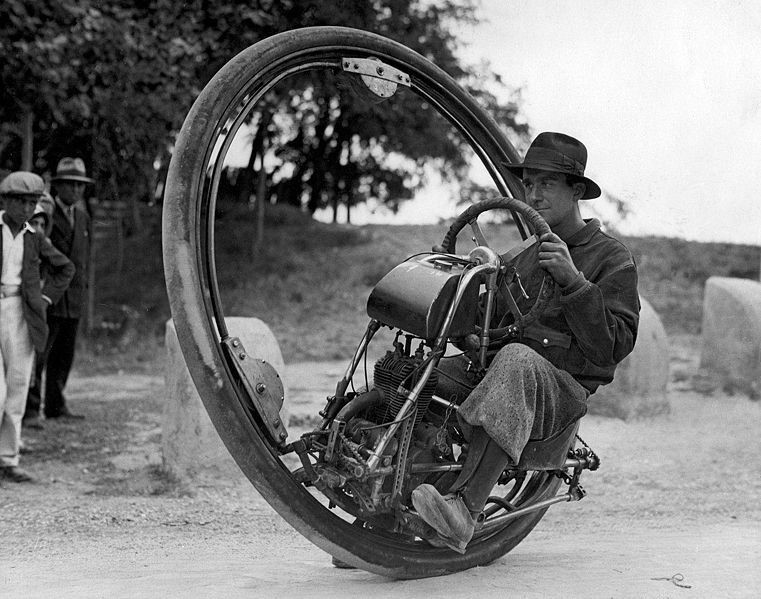
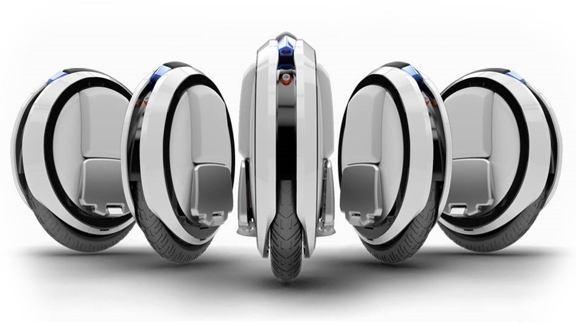
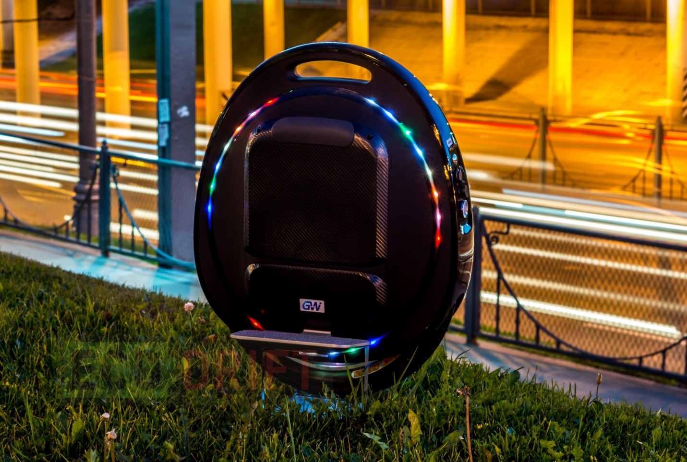

Моноколеса – транспорт ощутимого будущего
Современные технологии позволяют значительно изменить жизнь человека. Речь идет не о ракетостроении или робототехнике. Мы говорим о технике, которая доступна каждому, а именно – моноколесах. Этот транспорт появился достаточно давно и постоянно эволюционирует, постепенно вытесняя привычные велосипеды и самокаты.
техническая составляющая
Давайте разберем принцип работы моноколеса. Его часто путают с теми же сегвеями или гироскутерами, но принцип работы этого уницикла абсолютно другой.
Внешне устройство выглядит как колесо с электромотором и контроллером управления, который при помощи гироскопов оценивает свое положение в пространстве. Датчики Холла позволяют оценивать положение колеса относительно корпуса. Этой информации достаточно для решения контроллером несложных задач, которые позволяют поддерживать педали колеса горизонтально по продольной оси. Поворачивает колесо за счет наклона влево-вправо, которые контролирует сам человек, управляющий моноколесом. Все работает по принципу обратного маятника. Это очень точная система, которая широко используется в различных технических устройствах.
Если объяснять простыми словами, то колесо подстраивается под ваши действия. Для ускорения достаточно наклониться вперед (чем больше наклон, тем сильнее ускорение), для торможения – назад, для поворота нужно просто наклонить колесо ногой в нужную сторону.
Чтобы окончательно закрепить отличие моноколеса от остальных унициклов, рассмотрим основные принципы их работы:
- Гироскутеры – также оснащены двумя колесами, которыми можно управлять отдельно специальными педалями.
- Сегвеи – имеют два колеса, на каждом из которых имеется своя сбалансированная ось. Управляется с помощью ручек.
- Моноциклы – достаточно популярный вид одноколесного транспорта. Имеет руль, сидение, самобалансирующиеся доски и прочие примочки для комфортного управления.
история возникновения моноколеса
Стремление человека к быстрому перемещению с одной точки в другую породило бесчисленное множество идей, которые в конечном итоге привели к современному транспорту. Еще в 19 веке первые моноколесо пытались составить конкуренцию популярным велосипедам. Но эти проекты были настолько большими и неповоротливыми, что выбор был очевиден. К тому же были проблемы как с разгоном, так и с торможением, практически никакого контроля.
В 20 веке появились варианты с двигателем внутреннего сгорания, но по аналогичным причинам полностью уступали мотоциклам. Был один проект моноколеса, который разработал Чарльз Тейлор еще в 1960-х. Он неплохо ехал, но им все также было затруднительно управлять.
В эту же эпоху широкое применение одноколесные велосипеды находили в цирках. Но, к сожалению, больше нигде не прижились. Никто не хотел долго обучаться езде, да и обычный велосипед был гораздо удобнее.
Уже в 1978 году был подан первый патент, который внешне напоминал современное моноколесо. Изначально планировалось полуавтоматическое управление, но из-за дорогостоящих технологий было принято решение полностью передать управление человеку. Принцип работы был достаточно прост – человек наклонял педали, тем самым с помощью резистора передавая усилие электромотору. Таким образом осуществлялось движение. К сожалению, технология не считалась успешной, так как при езде сложно было удерживать равновесие, человека постоянно кидало вперед-назад.
В 2006 году мир увидел первый агрегат, напоминающий современное моноколесо с системой управления на акселерометрах. Техника была очень легкая, даже для нашего времени, – вес составлял всего 4 кг. Эта конструкция во всем обгоняла свое время. До сих пор используют аналогичную, но усовершенствованную технологию. Единственным нюансом были абсолютно бесполезные фиксаторы голени.
Параллельно этому патенту было много других проектов. Первыми среди них стали именно сигвеи, которые покорили мир в начале 20 века. Как и предполагалось, они должны были полностью вытеснить все одиночные виды транспорта, особенно велосипеды. Из-за высокой цены этого не случилось, люди попросту не видели смысла в покупке новой еще не опробованной техники за такую сумму. Тем более, они полностью уступали велосипедам по всем параметрам. В итоге ниша сигвеев так и осталась небольшой, а компанию не так давно купила китайская фирма Ninebot, которая начинала с производства моноколес.
Идеальная технология вот-вот должна была показаться миру. Eunicycle, Enicycle, SBU – всех эти изобретения объединены идеей эволюции оригинального проекта. Но, как показала практика, конструкция не была идеальной. Второй причиной провала проектов было отсутствие возможность производства.
Последний, но самый важный шаг сделал Шейн Чен вместе с компанией Inventist. Он полностью отказался от сиденья и сумел наладить производство в достаточных масштабах, чтобы сделать моноколесо узнаваемым во всем мире. Так появилось первое моноколесо Solowheel, которое было запатентовано в 2011 году. В погоне за уникальной и запоминающейся внешностью производство этой компании упало. Изобретатель пытался дать жизнь моделям Spirit и Orbit, но запустить в серию их так и не получилось.
Результат оказался намного печальнее ожиданий. В компании так и производили всего две модели, которые попросту морально устарели. Другие китайские компании не теряли времени и сразу начали производство с прямой копии первого моноколеса. Только оно уже отличалось намного большей дальностью перемещения и скоростью движения. К тому же, дизайн явно выделялся оригинальностью, каждому покупателю предоставляли широкий выбор дизайна и дополнительных аксессуаров.
На сегодняшний день положение компании Inventist нельзя назвать хорошим. Скорее всего, в ближайшем будущем ее попросту купит другая компания и только ради патентов.
современные моноколеса
Современные модели отличаются от своих предшественников рядом преимуществ. Самыми заметными являются технические характеристики:
- Скорость. Еще недавно скорость в 15-20 км/ч для моноколеса казалась ошеломляющей. Теперь уницикл способен развить скорость до 40 км/ч. Лихачи устанавливали и намного большую скорость, но это точно не безопасно. Моноколесо рано или поздно просто не сумеет вовремя подстроиться под человека и сбросит его. Делать так определенно не стоит!
- Запас хода. Этот параметр изменяется от многих факторов: веса человека, стиля езды, скорости езды и даже температуры на улице. Запас хода прямо пропорционально зависит от мощности батареи. Самые мощные модели способны проехать более 100 км на одном заряде. Чем выше интенсивность езды, тем меньше дальность. Если батарея разряжена более чем на 30%, моноколесо уже не сможет развивать высокую скорость передвижения. Точные расчеты можно провести в специальном калькуляторею
- Мощность. Сразу следует отметить, что безопасная езда начинается на моноколесах с мощностью от 500-600 Вт. На дешевых вариантах, у которых по 350 Вт лучше вообще не ездить, они могут скинуть вас даже на небольшой кочке из-за недостатка мощности. На топовых моделях мощность достигает 1500 Вт, чего вполне достаточно для подъема в крутую горку. Некоторые моноколеса способны обеспечить пиковую мощность до 2000-2800 Вт, чтобы без проблем преодолеть препятствие.
- Диаметр колеса. Стандартный диаметр составляет 14, 16 и 18 дюймов. Чем больше колесо, тем лучше проходимость. Маленькие колеса более маневренные.
- Вес. Вес зависит от многих параметров (объем батареи, размер колеса, материал и прочее), поэтому можно назвать лишь диапазон, который составляет примерно 12-24 кг.
- Цена. Стандартная цена варьируется в пределах 8000-14 000 грн. Топовые модели стоят около 20 000 гривен, но и характеристики гораздо лучше.
Также существует и ряд дополнительных удобств, которые значительно упрощают использование этого устройства:
- Выдвижная ручка. Чтобы не тащить тяжелое моноколесо в руках, можно его попросту катить.
- Освещение. Фары отлично освещают маршрут передвижения в темное время суток. В габаритных огнях присутствует индикатор торможения, как и на автомобилях.
- Подсветка. Скорее визуальный эффект, чем польза.
- USB. На мощных устройствах присутствует такой разъем, который позволяет подзарядить гаджет во время прогулки.
- Колонки. Так как ездить в наушниках на таком транспорте небезопасно, многие модели включают в себя встроенные Bluetooth-колонки, через которые легко можно транслировать любимый плейлист с телефона.
У некоторых моноколес есть даже специальное приложение на телефон. Программа в основном показывает статистические данные, параметры движения, можно выполнить несколько настроек.
немного о недостатках
Как и вся техника, моноколеса имеют свои негативные моменты. В основном они заключаются именно в автоматической балансировке, которая и является их преимуществом. Человек может слишком наклониться, оказав чрезвычайное давление на транспорт, тем самым спровоцирует падание с педалей и перегрузку мотора.
Решение задачи обратного маятника также может оказаться недостатком при неправильной эксплуатации устройства. Если поднять колесо, оно будет раскручиваться до определенной скорости, пока не получит контакта с поверхностью. В противном случае оно просто выключится. На этой технике не получится буксовать или скользить. Моноколеса не могут ехать по рыхлой или скользкой поверхности, например, песку или льду. Устройство начнет буксовать и в результате сбросит ездока. Хотя небольшой слой того же песка или грязи не вызывает никаких проблем при движении по такой поверхности.
Современные модели чувствительны к перепадам нагрузок. Есть особенно неудачные примеры, когда устройство выходила из строя при наезде на крупную ветку или попытке заехать на бордюр с места. Но, это скорее некачественные модели и неправильная эксплуатация, чем закономерность. На многих моноколесах стоят специальные предохранители, которые при сверхнагрузке защищают электромотор от окончательной поломки. Предохранитель всегда можно заменить, но поездка в таком случае будет окончена.
Никто не застрахован от погоды. Эксплуатация такого транспорта в дождливую погоду или зимой попросту небезопасна.
В любом случае, остается только ждать, что в ближайшем будущем изобретут новые контроллеры, которые полностью избавят покупателя от возможности возникновения вышеперечисленных проблем.
будет ли будущее за моноколесом
Электротранспорт развивается все стремительнее с каждым годом. Велосипеду определенно придется потесниться на городских улицах. У моноколеса есть несколько конкурентов, но самым распространенным является электросамокат. Он больше всего сравним с моноколесом во многих параметрах, но уступает некоторыми особенностями, например, немного меньшая проходимость из-за диаметра колес.
Эти два вида элекстротранспорта определенно лучшее, что вы можете купить из подобной техники. Давайте проведем небольшое сравнение этих устройств с велосипедом:
- Они очень компактные, могут храниться в доме или квартире, без проблем помещаются в любой общественный транспорт при необходимости.
- Скорость движения в среднем выше, чем у велосипедов.
- Для перемещения не нужно прилагать физических усилий, даже на неровном рельефе. Отличный способ добираться на работу «сухим».
- Управление максимально приближено к управлению мыслью – в случае с моноколесом управлять нужно только телом.
- Практически не требуется обучение езде (особенно на электросамокате).
- Привлекательный внешний вид и небольшой вес.
Если говорить о других видах транспорта, например, складных велосипедах или обычных самокатах, то тут недостатки очевидны. Обычный самокат в принципе подходит для езды по городу, но абсолютно бесполезен на длинных дистанциях. Складной велосипед не отличается надежностью конструкции, достаточно габаритный даже в сложенном состоянии. Есть еще вариант купить электровелосипед, по скорости он самый быстрый, но и очень дорогой. К тому же, достаточно много весит.